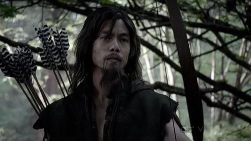
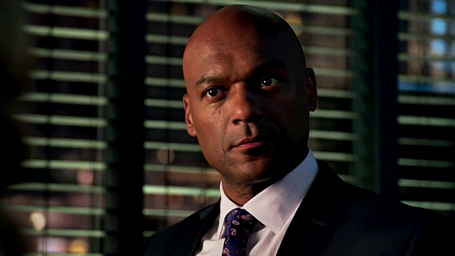
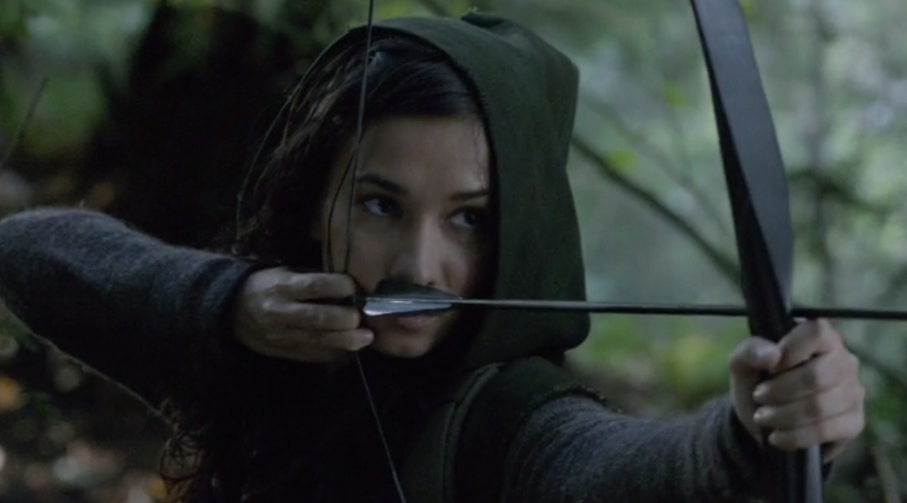
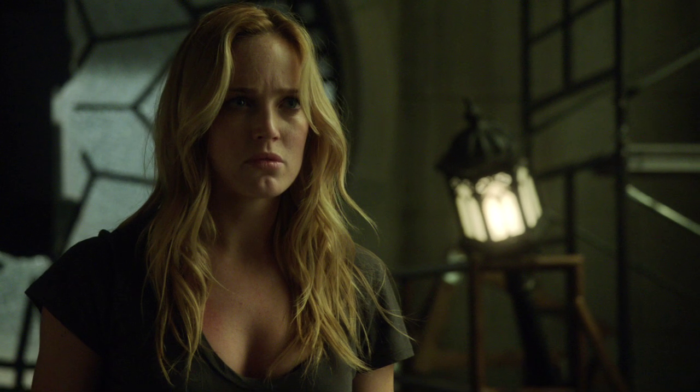
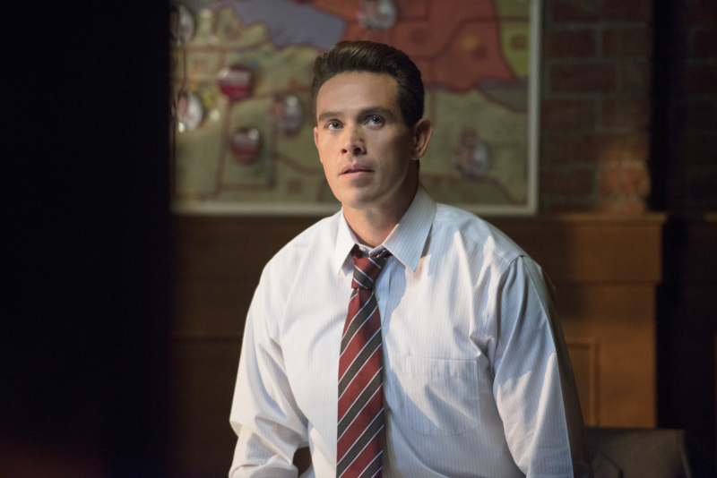
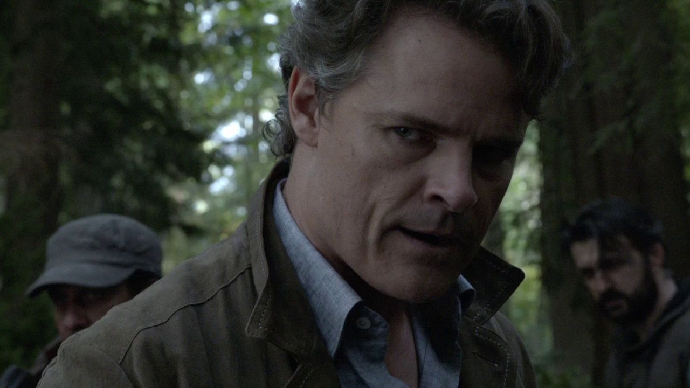
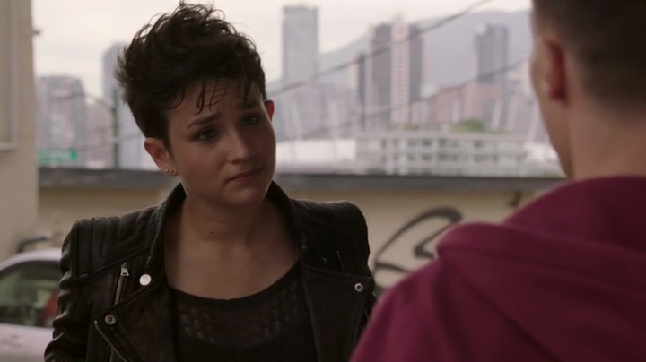
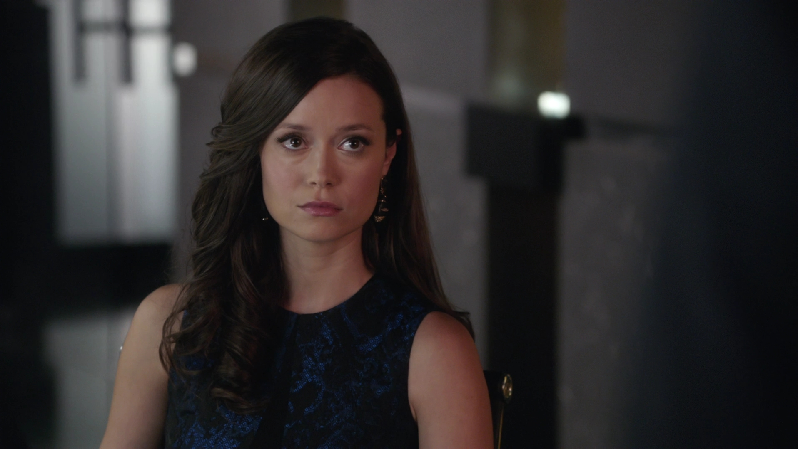
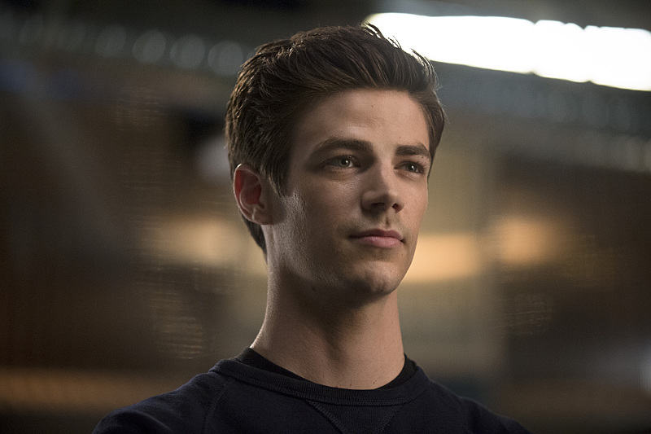

Yao Fei
 C'est un ancien général de l'armée chinoise, expert en art martiaux. Il a dû porter le chapeau pour un massacre qu'il n'a pas commis. Pour cela, il a été condamné à un exil à vie sur une île nommée Lian Yu. Il aide Oliver à survivre sur l'île.
Byron MannWalter Steele
 Nouveau beau-père d'Oliver et nouveau mari de Moira Queen. Après la disparition d'Oliver et de son père, il succède à ce dernier à la tête de Queen Consolidated. À la suite de la disparition de Robert Queen, il se rapproche un peu plus de Moira et se marie avec.
Colin SalmonShado
 Fille de Yao Fei, prisonnière au début par Edward Fyers. Sauvée par Oliver et Slade Wilson. Elle deviendra le mentor d'Oliver pour le maniement de l'arc et affinera l'art du combat d'Oliver. Elle fut victime du choix imposé par le Dr Anthony Ivo à Oliver, qui choisira de sauver Sara plutôt qu'elle.
Celina Jade Celina JadeSara Lance
 Sœur de Laurel Lance, elle est supposée morte après le naufrage du bateau. Elle réapparaît mystérieusement des années après sous le pseudonyme de The Canary, afin de protéger sa famille de la Ligue des Assassins, l'organisation qui l'a entraînée et qui la recherche.
Caity Lotz Caity LotzSebastian Blood
 Conseiller municipal qui émerge à la suite du tremblement de terre dans les Glades provoqué par Malcolm Merlyn, il veut se présenter aux prochaines élections municipales. Cependant, il est aussi l'homme de main de Slade qui veut se venger d'Oliver. Sebastian recrute dans les Glades ses futurs frères d'armes et leur injecte le « mirakuru ».
Dr Anthony Ivo
 Docteur qui a recueilli Sara à la suite du naufrage du Queen's Gambit et fait prisonnier Oliver. Il mène des expériences pour créer de super-combattants, et recherche un produit appelé « mirakuru », qui serait l'avenir de la race humaine. Dans cette entreprise, il croise la route d'Oliver, Slade et Shado.
Dylan Neal Dylan NealCindy alias "Sin"
 Elle s'appelle Cindy mais préfère le pseudonyme Sin. C'est une jeune orpheline entêtée amie avec Sara. Dans l'épisode 14 de la deuxième saison, il est révélé que son père s'est écrasé en avion sur l'île, mourant, il remet une photo d'elle alors âgée de 12 ans à Sara en lui demandant de veiller sur elle. Sa mère est morte d'un cancer 10 ans plus tôt.
Bex Taylor-KlausIsabel Rochev
 Elle est envoyée par Stellmoor International afin de racheter des parts de Queen Consolidated. Elle dirige conjointement avec Oliver Queen la société. Elle a une aventure avec Oliver et avait eu une aventure avec son père des années plus tôt. Plus tard, elle prendra le contrôle de Queen Consolidated.
Summer GlauBarry Allen
 Il est enquêteur adjoint de la police scientifique de Central City. Il vient à Starling City en pensant qu'un être super puissant soit lié à une enquête de Central City. Un contact se fait entre Barry et Felicity, il aide et sauve la vie d'Oliver. À son retour à Central City dans son laboratoire, il est victime d'un accident dû à la foudre et à l'explosion du nouvel accélérateur de particule de S.T.A.R. Labs.
Grant Gustin Grant Gustin